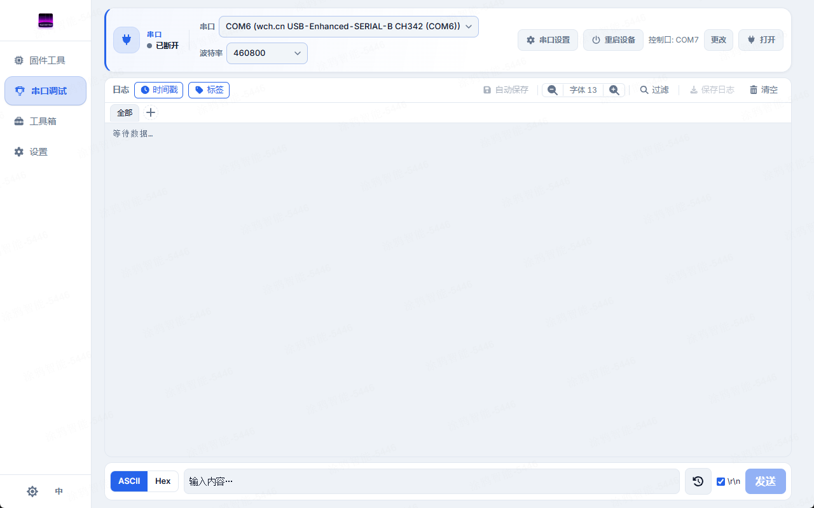
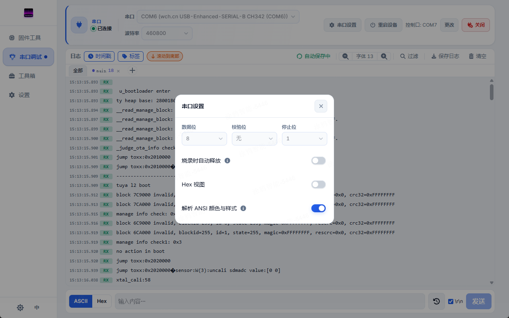
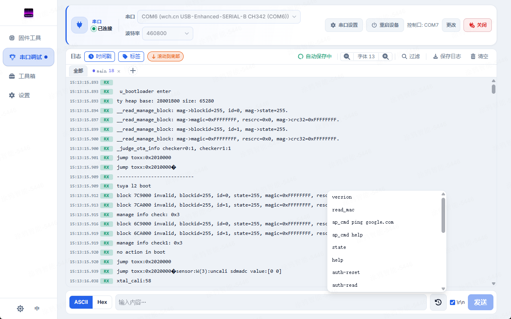
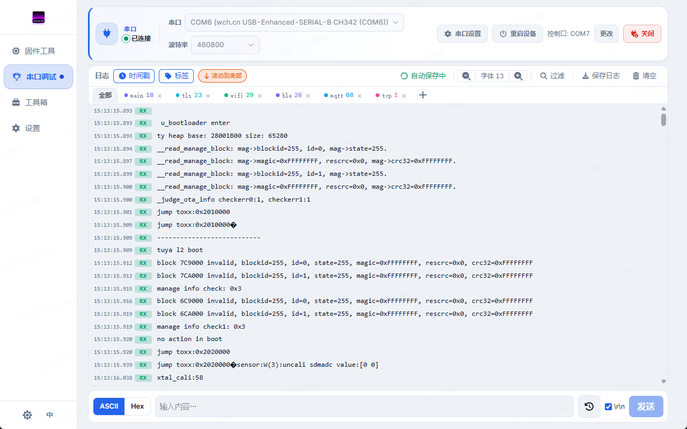

Serial Debug
This page is the complete reference for the Serial Debug page: a full serial terminal / log monitor, covering connect & UART config, device reset, ASCII / Hex log views, the send bar, the Hex popup, keyword filter tabs, and auto-release & auto-save.
1. Overview
Serial Debug is a full serial terminal: you can both watch the device's live log output and send commands or data to it. The layout is made up of the top connection bar, the central log view, the bottom send bar, and the filter-tabs / settings area on the side.
The page has a keep-alive mechanism: when you navigate away from Serial Debug (say, to check Firmware Flash progress) and come back, the background RX stream keeps running, so you still see what the device printed while you were away — navigating between pages does not drop data.

2. Connect & UART config
The top connection bar establishes and manages the serial link:
- Serial port: a dropdown of currently available ports; the list is rescanned each time you open it.
- Refresh feedback: scanning, no devices and scan failures have distinct messages. A remembered unavailable port stays visible but cannot be opened; use Refresh after reconnecting it.
- Custom baud: restored custom values remain visible. Enter an integer from 1 to 4294967295; invalid input shows a field error and blocks Open. The adapter must also support the selected rate.
- Connect / Disconnect: manually open or close the link to the selected port.
- Status indicator: shows whether the port is connected / disconnected / held by another page.
The common parameters (baud, etc.) are picked right on the connection bar; the advanced UART settings live in the Serial Port Settings modal on this page:
| Parameter | Values | Notes |
|---|---|---|
| Baud | 9600–921600 steps + custom | Unless you override it, it defaults to the log baud of the currently selected flash chip (see the chip manifest). |
| Data bits | 5 / 6 / 7 / 8 | Data bits per frame. |
| Parity | none / odd / even | No parity / odd / even. |
| Stop bits | 1 / 1.5 / 2 | Stop bits per frame. |
3. Device reset
Serial Debug can reset the device via the DTR / RTS lines, so you can reboot it and re-watch the boot log without unplugging anything.
- Reset the session port: pulls a DTR/RTS reset sequence on the currently connected port.
- Reset a different control port: when the device's reset pin is not on the log port, you can use a runtime chip id to target another control port for the reset, then return to the log port and keep receiving.
4. Log view
The log view is the main body of the page, scrolling incoming data live. It supports two views plus a set of display toggles:
- ASCII view and Hex view: switch between plain text and hexadecimal; the Hex view lets you set bytes per row (8 / 16 / 32) and renders invisible bytes as explicit hex.
- ANSI color toggle: parses ANSI color escape codes from the log and colorizes it, making log levels easier to tell apart.
- Font size: adjustable from 10–18px to suit your screen and eyes.
- Timestamp toggle: prefixes each line with its receive time.
- Direction badge toggle: prefixes each line with a TX (sent) / RX (received) / SYS (system) badge.
- Clear: clears the current session log and its archive; line numbers restart. Command history is kept.
- Export: saves the current log to a file.

History and search
Click History to read the current session archive, or scroll up to load older lines. History shows the loaded line range and offers Jump to start and Back to live. New data continues arriving while your reading position stays fixed; the status bar shows new line counts. A failed read keeps loaded content; click Retry to continue.
Scrolling up in the live window also pauses following and retains a reading snapshot bounded by the display-window limit. It survives page navigation; reducing the window limit trims the snapshot. Returning to the bottom resumes the latest content.
Ctrl + F searches the loaded window; Search whole session searches archived content. In filter results, View context opens surrounding session lines. Back to results restores the previous results and position.
5. Send bar
The bottom send bar is for actively sending data to the device:
- ASCII or Hex mode: ASCII mode sends as text; Hex mode sends as hexadecimal bytes (for binary commands).
- Optional
\r\n: choose whether to append a CR/LF on send, per the target device's protocol. - Enter to send: press Enter to send the current input. Enter used to confirm input-method composition does not send.
- Input retention: input clears only after a successful send. Invalid Hex or a send failure keeps your draft and shows an inline error; edits made while sending are also preserved.
- Send history: keeps the latest 100 commands plus up to 50 favorites. Search by content or name, preview the full command, name it, favorite it, or delete one entry. Commands persist across restarts.
- Accurate reuse: selecting an entry previews it. Fill send input restores its ASCII/Hex mode and line endings without sending. Older entries show “Settings unknown” and retain your current settings when filled.
- Draft recovery and keyboard: ↑ / ↓ browse recent commands and restore the draft and settings on returning to the newest position. Restore draft also recovers them. In the history search field, arrow keys select and Enter fills; Escape closes and restores trigger focus. Commands can be prepared before connecting; Send becomes available with an open port.

\r\n option, history dropdown6. Hex popup
Select displayed log text and use Text to Hex or View selected text from its context menu. The popup is a read-only viewer: switch Hex / ASCII and bytes per row, copy the displayed result, or press Escape to return to the log.
7. Filter tabs (Watch chips)
Filter tabs (watch chips) let you give each keyword you care about its own tab, so you can focus on just the relevant lines in a long log:
- Keyword: can be plain text or a regular expression.
- Auto-color: each tab automatically takes a color from a 6-color cycle, so they're easy to tell apart at a glance.
- Live counts: each tab shows the number of matches in the current session, updating live as the log grows.
- Filter by tab: selecting a tab filters the view to lines matching its keyword; the "All" tab restores the full view.
- "Load older": paginates in earlier matches when there are many.
- Keyboard and failures: activate a filter with its button, or use its separate remove button. Enter adds a filter after composition ends; creation shows a pending state and preserves the keyword on failure. Escape closes the add panel and restores its trigger.
Filtering runs server-side over the whole session, not just over the current visible window — so even data that has aged out of the display window can still be recovered by a filter.

8. Auto-release & auto-save
Both features make a long-running Serial Debug session more hands-off; auto-save can also be configured under Settings · Serial logs.
Auto-release
Auto-release solves port contention:
- When Firmware Flash needs a port that Serial Debug is currently holding, Serial Debug auto-releases that port for flashing; an optional confirm prompt asks you first before releasing.
- After flashing finishes, Serial Debug auto-resumes the previous connection and keeps receiving the log — no manual reconnect needed.
Auto-save
Auto-save continuously saves received logs to disk, for retention after a session ends or the archive reaches its limit:
- Save directory: pick a directory and Serial Debug streams the whole session into it.
- Timestamped filename: optionally add a timestamp to the filename to tell sessions apart.
- Chunked writes: flushes to disk in chunks of up to 128 KiB, balancing throughput with timeliness.